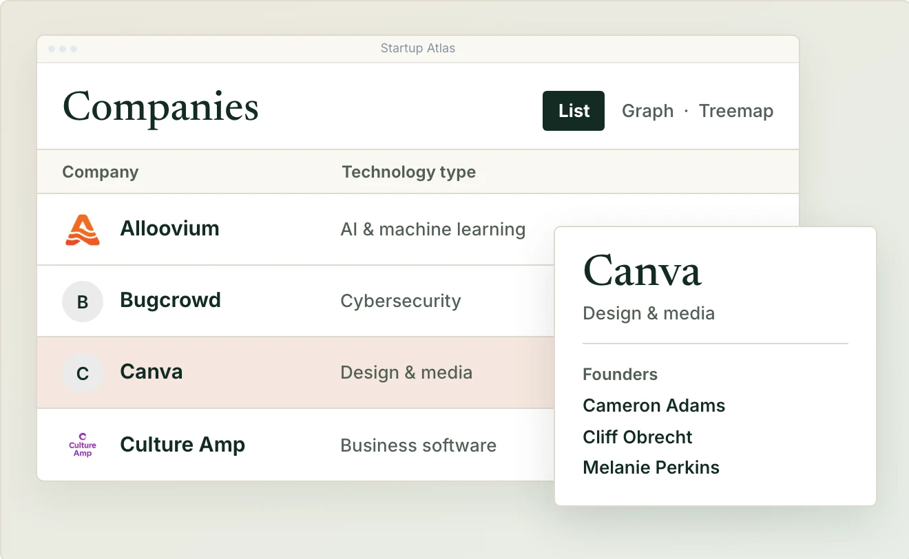

Explore the startup ecosystem.
Find companies, follow the people and investors behind them, and compare how different technologies are valued.
Explore companies
Find companies, follow the people and investors behind them, and compare how different technologies are valued.
Explore companies